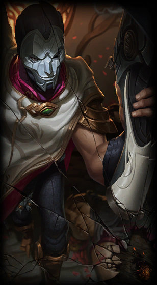

Jhin
the Virtuoso
Class :
Marksman, Mage
Lore :
Jhin is a meticulous criminal psychopath who believes murder is art. Once an Ionian prisoner, but freed by shadowy elements within Ionia's ruling council, the serial killer now works as their cabal's assassin. Using his gun as his paintbrush, Jhin creates works of artistic brutality, horrifying victims and onlookers. He gains a cruel pleasure from putting on his gruesome theater, making him the ideal choice to send the most powerful of messages: terror.
Stats :
| Health | Health per level | Mana | Mana per level | Movement speed | Armor | Armor per level | MR | MR per level | Range | HP regen | HP regen per level | Mana regen | Mana regen per level | Crit | Crit per level | AD | AD per level | AS per level | AS |
|---|---|---|---|---|---|---|---|---|---|---|---|---|---|---|---|---|---|---|---|
| 585 | 93 | 300 | 50 | 330 | 24 | 3.5 | 30 | 0.5 | 550 | 3.75 | 0.55 | 6 | 0.8 | 0 | 0 | 59 | 4.7 | 0 | 0.625 |

Passive : Whisper
Jhin's hand cannon, Whisper, is a precise instrument designed to deal superior damage. It fires at a fixed rate and carries only four shots. Jhin imbues the final bullet with dark magics to critically strike and deal bonus execute damage. Whenever Whisper crits, it inspires Jhin with a burst of Move Speed.